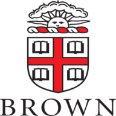
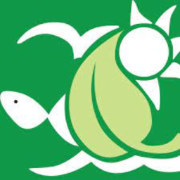
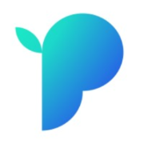
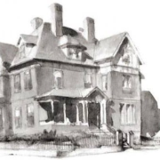
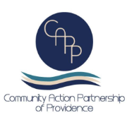
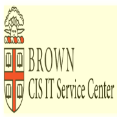
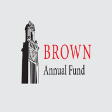

Experience
A brief history of some of my past and current experiences and employment history.

Brown University
Brown University
CSCI0111: Undergraduate Teaching Assistant · August 2021 - Present
- Working as a UTA for CSCI0111: Computing Foundations: Data (Taught in Python and Pyret programming languages).
- Assisting professor to re-design projects, manage coursework, and grade assignments for 200+ students.
- Holding weekly office hours, conceptual sessions and labs.

Environment Council of Rhode Island
Environment Council of Rhode Island
Website Developer · June 2021-Present
- Leading the redesign of ECRI’s website.
- Assessing strategic plan and working on initial implementation of action items.
- Fixing bugs from existing websites and implementing enhancements to improve web functionality and speed.

Pangea.app
Pangea.app
Freelance Intern · April 2021 - Present
- Selected among more than 2500 students to be a part of the spring 2021 class of Top Emerging Talent: a program to identify the most capable, reliable, and motivated college students in the U.S and match them with the talent marketplace platform's most promising, high-growth companies.
- Working on a variety of freelance projects.

Brown Center for Students of Color
Brown Center for Students of Color
Office Associate · August 2020 – January 2021
- Helped organize and plan events to promote mission of the BCSC
- Assisted the professional staff administratively with logistics and planning
- Organized monthly presentations and meetings to discuss BCSC goals and objectives

Community Action Partnership of Providence
Community Action Partnership of Providence
Research Intern · May 2020 - August 2020
- Researched the effects of COVID-19 towards People of Color and the homeless community in Rhode Island
- Investigated systematic racism in healthcare in Providence.
- Conducted interviews and organized photovoice visual and statistical research

Brown CIS IT Service Center
Brown CIS IT Service Center
IT Technican · January 2020 - May 2020
- Documented and tracked work-order requests and tickets
- Provided Customer service communication relating to technical assistance, troubleshooting and other duties
- Established organizational and multi-tasking skills in a fast-paced working environment

Brown Annual Fund
Brown Annual Fund
Student Caller · August 2019 - December 2019
- Worked as a student caller for the Brown Annual Fund at the University.
- Collected donations from alumni for various student scholarships and organizations.